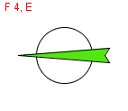
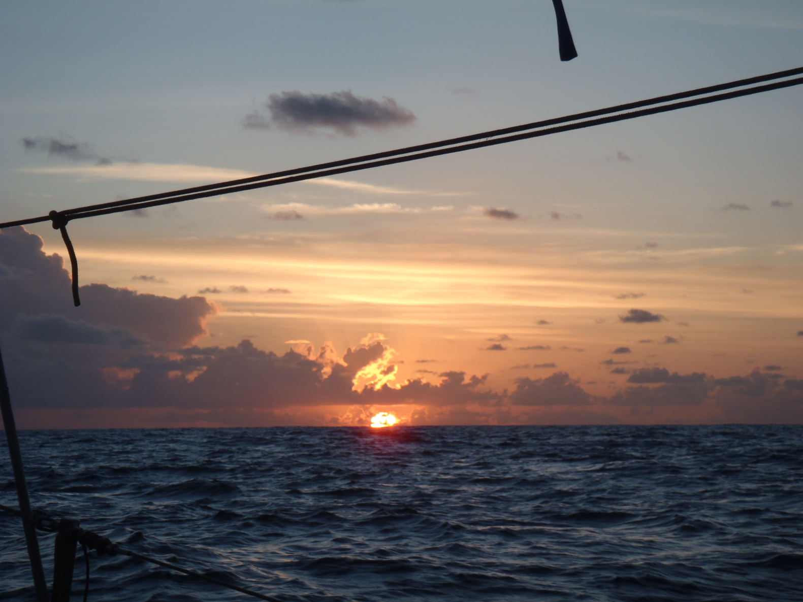
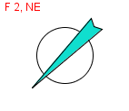
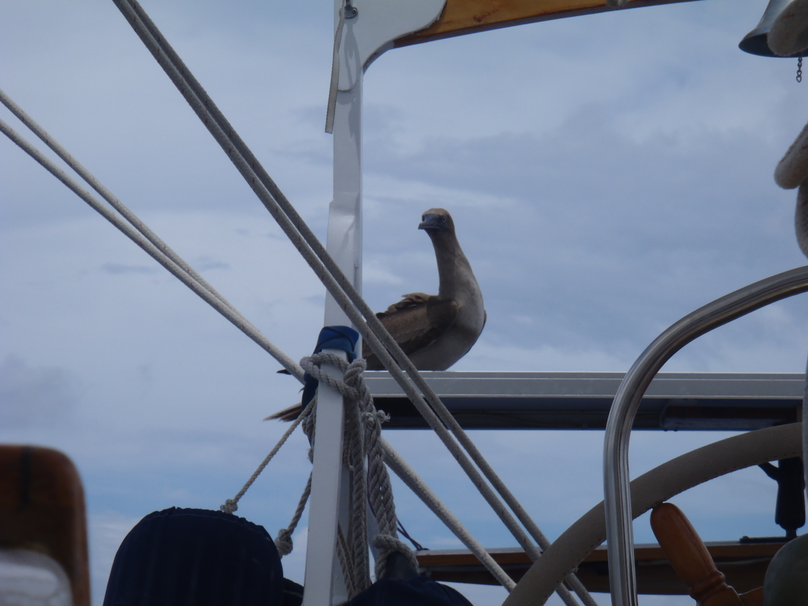
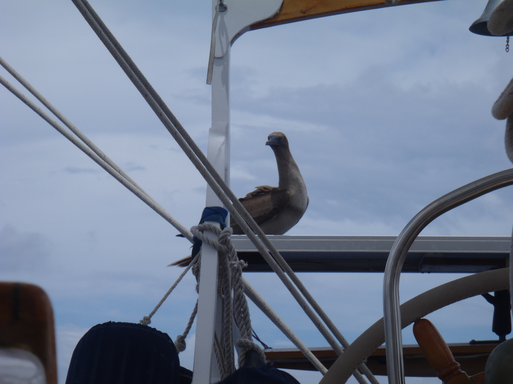

Mercredi 24 novembre 2010

À midi, on envoie le spi, mais c'est un peu pointu dans les risées..., il retourne dans son sac à 12:30.
La chaussette à spi est vraiment pratique, ça marche très bien.
Deuxième étape, de Nuku-Hiva à Rangiroa |
Dimanche 21 novembre 2010 |
 |
|
On dérape le mouillage à Taiohae à 10:30, les dauphins viennent nous dire au-revoir entre les Sentinelles.
Curieusement, la houle est tombée. Encore plus curieusement, les prévisions météo l'avaient prévu. Le temps est idéal, on porte yankee, trinquette, grand'voile haute, au travers. Le taud de soleil au-dessus du cockpit. On a un très joli lever de lune ce premier soir. |
|
Lundi 22 novembre 2010 |
|
|
On a toujours des conditions de temps très favorables, mais Corine n'est pas en forme... C'est comme si elle avait de la fièvre.
On a porté la voile d'étai pendant quelques heures aujourd'hui. Et ce soir, la lune se lève comme hier soir. |
|
Mardi 23 novembre 2010 |
|
|
Corine va mieux aujourd'hui.
On a eu une nuit très agréable toujours autour de 6 nœuds. Le vent semble vouloir tourner vers le nord... On empanne. On tirera des bords de largue si c'est nécessaire. On envoie l'artimon à 15:35. Même portant comme on l'est, ça marche, on va plus vite. Et en plus, ça dégage le panneau solaire Des grains ce soir après le coucher du soleil (30-35 nœuds). |
|
Mercredi 24 novembre 2010 |
|
|

Toutes voiles dehors, babord amure à 1 heure ce matin. Tout va bien !
À midi, on envoie le spi, mais c'est un peu pointu dans les risées..., il retourne dans son sac à 12:30. La chaussette à spi est vraiment pratique, ça marche très bien. |
|
Jeudi 25 novembre 2010 |
 |
 
On a remplacé le yankee par le génois (et aussi les écoutes de foc - les nouvelles attendaient, les précédentes étaient un poil trop courtes pour le génois).

On a remplacé le yankee par le génois (et aussi les écoutes de foc - les nouvelles attendaient, les précédentes étaient un poil trop courtes pour le génois).
Avec le tangon de spi, c'est stable au vent arrière. Une espèce de fou (Fou à ventre blanc) tournait autour du bateau depuis un moment..., il a décidé d'atterrir sur le panneau solaire pour voir exactement quel genre de bestioles on était. Et bien sûr, il a fallu nettoyer derrière lui..., ces trucs-là posent une pêche à chaque fois qu'ils se posent quelque part. La météo prévoit des orages pour cette nuit... |
|
Vendredi 26 novembre 2010 |
||
|
On passe à 5 heures du matin, avec le soleil, le vent et le courant dans le dos, comme dans le livre ! Il y a quelques grands dauphins qui rentrent avec nous. Avec le vent et le courant dans le même sens, la passe est plate comme un lac. On arrondit cet îlot visible de l'extérieur, celui qui a un palmier tout seul au milieu. On mouille dans 12 mètres d'eau, et voit le fond, tellement l'eau est claire. Tout autour, c'est tout bleu et vert... Bleu pour l'eau (toutes sortes de bleus), et vert pour les palmiers... Wow ! Je sais, encore... Le lagon est tellement grand qu'on ne voit pas l'autre côté de l'atoll. |
||